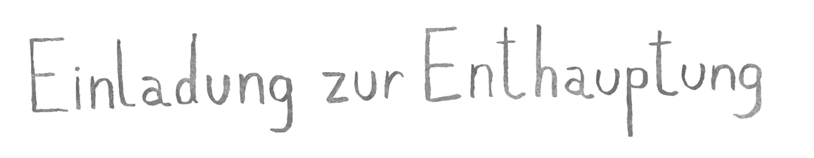

Nabokovs in den 1930ern in Berlin entstandener Roman Einladung zur Enthauptung zeigt den Emigranten Cincinnatus als Fremdkörper in einem faschistischen Staat. Zum Tode verurteilt, lebt er isoliert im Gefängnis, von höflicher Willkür umgeben, während er um Selbstgewissheit ringt. Die Inszenierung kontrastiert ihn mit Gefängnispersonal, Kammerorchester und polystilistischer Musik zwischen Oper, Volkslied und Avantgarde.


Pressestimmen
„Abseits der aktuellen Politik wird mit dieser Produktion noch etwas anderes Großes offenbar: Das sind junge Künstler, die die Wirkmacht ihrer Kunst wieder in allen – auch pathetischen – Mitteln ernst nehmen und benutzen. Das ist nach 40 Jahren Ironie, Verweigerung und Postmoderne neu. Ein neues Theater für eine neue Zeit."
„Ästhetisch erinnert das Bühnenbild der Uraufführung [...] an Lars von Triers Film ‚Dogville'. Denn von Kostüm über Requisiten bis zur emotionalen Affektion wird hier die karge Bühnenlandschaft mit einem ganz ernst gemeinten Realismus aufgefüllt. Die Hauptperson Cincinnatus wird von zwei Schauspielstudierenden als Sprechrolle gespielt aufgeteilt in den pragmatischen David Stancu und die mit dem Leben, den Träumen und der Welt weiterhin stark verbundene Anouk Warter – ein Regietrick, der die emotional unbegreifliche Situation des Gefangenen offenlegt."
Süddeutsche Zeitung: Brutal nah an der grausamen Realität, 23.02.2024
„Das Allererstaunlichste ist: Es handelt sich auf fast jeder Position um eine Nachwuchsarbeit. Zmeltys Partitur ist bewusstes Splitterwerk, sie bewegt sich so mutig wie gewitzt zwischen Akkordeon-Verwehungen (als Widerhall der Vergangenheit), Zither-Einsprengseln (als Begleiter des Titelhelden), Zuspät-Romantik, russischem Volkstum oder verbogenen Walzern. Letztere sind das Attribut von Pierre, dem freundlichen Henker: Countertenor Pieter De Praetere gibt den Entertainer, der beherzt auch Grelles riskiert."
„Es ist eine Leistungsschau der Theaterakademie, der man nur allerhöchsten Respekt zollen kann."
Münchner Merkur: Beklemmend aktuell, 27.02.2024
„Zmelty hat, das darf nach dieser Uraufführung ohne Risiko behauptet werden, ein starkes Talent für Theater mit Musik. Bei dieser ‚Einladung zu einer Enthauptung' gehörte das Glück den Tüchtigen – und damit sind alle Beteiligten vor und hinter der Bühne und bei der Erarbeitung dieses wirklich aufregenden Abends gemeint."
Abendzeitung München: Alexey Nawalny stößt den Zuschauer in die Gegenwart, 24.02.2024
„Und die Musik von Leon Zmelty wird ebenfalls Requisite, zum unterstützenden Element einer schauspielerisch intensiven Suche ohne Ziel, ohne Ende. Er lotet die Grenzen der Instrumente aus, lässt klopfen, quietschen, schnarren klappern und dann wieder melodiös schweben – das aber selten. Meist ist die Musik Kulisse für ein Gefühl, das zu groß ist für einen Körper und sich deshalb die zwei Gefäße Cincinnnatus' erobern musste. Und am Ende steuert all das auf den stärksten und vielleicht wichtigsten Moment des Abends zu. Hinter der Hoffnung wartet die vollkommene Dunkelheit. Zu sehen sind Übertitel und zu hören ist die Stimme von Alexej Nawalny: ‚Für den Fall, dass ich getötet werde, ist meine Botschaft sehr einfach: Gebt nicht auf! Wenn sie sich dazu entschieden haben, mich zu töten, heißt das, dass wir unglaublich stark sind.' Kraftvoller und demütiger hätten Zmelty und Chagina ihre Stimmen in diesen Tagen nicht nutzen können."
Donaukurier: Hinter der Hoffnung, 24.02.2024